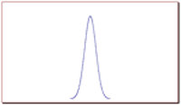

What is the Normal Distribution?
The normal distribution refers to a family of
continuous probability distributions
described by the normal equation.
The Normal Equation
The normal distribution is defined by the following equation:
Normal equation. The value of the
random variable
Y is:
Y = { 1/[ σ * sqrt(2π) ] } *
e-(x - μ)2/2σ2
where
X is a normal random variable, μ is the
mean, σ is the standard deviation, π
is approximately 3.14159, and
e is approximately 2.71828.
The random variable X in the normal equation is called
the normal random variable. The normal equation is the
probability density function for the normal distribution.
The Normal Curve
The graph of the normal distribution depends on two factors - the mean and the
standard deviation. The mean of the distribution determines the location of the
center of the graph, and the standard deviation determines the height
and width of the
graph. When the standard deviation is large, the curve is short and wide; when
the standard deviation is small, the curve is tall and narrow. All normal
distributions look like a symmetric, bell-shaped curve, as shown below.


The curve on the left is shorter and wider than the curve on the right, because
the curve on the left has a bigger standard deviation.
Probability and the Normal Curve
The normal distribution is a continuous probability distribution.
This has several implications for probability.
- The probability that X
is less than a equals the area under the normal curve
bounded by a and minus infinity (as indicated by the
shaded area in the figure below).
Additionally, every normal curve (regardless of its mean or standard
deviation) conforms to the following "rule".
Collectively, these points are known as the empirical rule
or the 68-95-99.7 rule. Clearly, given a normal
distribution, most outcomes will be within 3 standard deviations of
the mean.
To find the probability associated with a normal random
variable, use a graphing calculator, an online normal distribution
calculator, or a normal distribution table. In the examples below,
we illustrate the use of Stat Trek's
Normal Distribution Calculator,
a free tool available on this site. In the next lesson, we demonstrate
the use of normal distribution tables.
Normal Distribution Calculator
The normal calculator solves common statistical problems, based on the normal
distribution. The calculator computes cumulative probabilities, based on three
simple inputs. Simple instructions guide you to an accurate solution, quickly
and easily. If anything is unclear, frequently-asked questions and sample
problems provide straightforward explanations. The
calculator is free. It can be found under the Stat Tables
tab, which appears in the header of every Stat Trek web page.
Example 1
An average light bulb manufactured by the Acme Corporation lasts 300 days with
a standard deviation of 50 days. Assuming that bulb life is normally
distributed, what is the probability that an Acme light bulb will last at most
365 days?
Solution: Given a mean score of 300 days and a standard deviation of 50
days, we want to find the cumulative probability that bulb life is less than or
equal to 365 days. Thus, we know the following:
-
The standard deviation is equal to 50 days.
We enter these values into the Normal Distribution Calculator and compute the
cumulative probability. The answer is: P( X < 365) = 0.90. Hence,
there is a 90% chance that a light bulb will burn out within 365 days.
Example 2
Suppose scores on an IQ test are normally distributed. If the test has a mean
of 100 and a standard deviation of 10, what is the probability that a person
who takes the test will score between 90 and 110?
Solution: Here, we want to know the probability that the test score falls
between 90 and 110. The "trick" to solving this problem is to realize the
following:
P( 90 < X < 110 ) = P( X < 110 ) - P( X < 90 )
We use the Normal Distribution Calculator to compute both probabilities on the
right side of the above equation.
-
To compute P( X < 90 ), we enter the following inputs into the calculator:
The value of the normal random variable is 90, the mean is 100, and the
standard deviation is 10. We find that P( X < 90 ) is 0.16.
We use these findings to compute our final answer as follows:
P( 90 < X < 110 ) = P( X < 110 ) - P( X < 90 )
P( 90 < X < 110 ) = 0.84 - 0.16
P( 90 < X < 110 ) = 0.68
Thus, about 68% of the test scores will fall between 90 and 110.